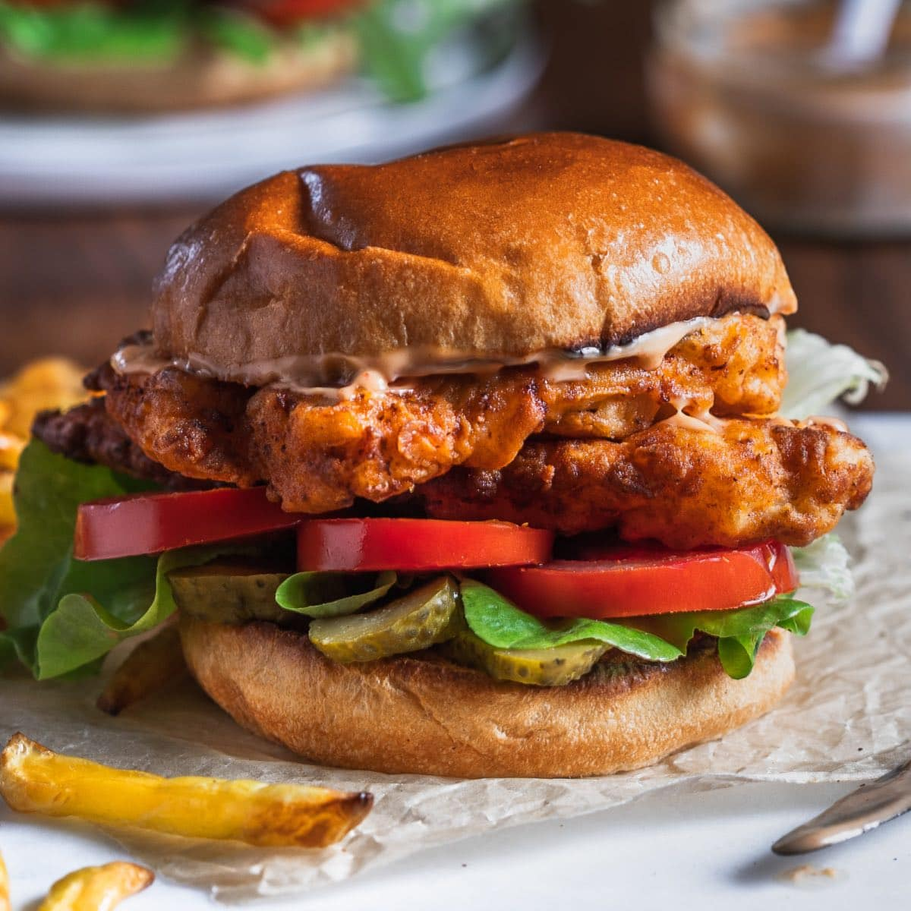

Pesto Pasta

Pesto pasta has always been a comfort dish for me; it’s quick, it’s easy, and great food for a dinner party or a comfy night in! It requires six main ingredients, plus additional spices as you see fit. If you’re not in the mood for pasta, you can always eat the pesto sauce on bread, crackers, or eggs! This recipe makes enough for around 4 people, so adjust accordingly.
Photo Gallery


Dead Simple Fried Rice

This Dead Simple Fried Rice recipe is an incredibly modular and tasty dish. At its core, it's just rice, vegetables, protein, and oil. As such, the dish can be modified to serve as many or as few people as needed with a wide variety of food preferences. Experimentation with what specific ingredients you enjoy the most will unlock the full potential of this dish.
Photo Gallery


Tomato and Eggs

Tomato and eggs is a hot dish which originated from China. It is a simple and fast dish to make, but it has good nutritional value. It is a very satisfying food to eat and popularly served with rice and topped with green onions.
Photo Gallery


Spicy Fried Chicken Sandwich
Photo Gallery


Sushi Bake

Do you want easy, quick way to enjoy sushi without having to do all of the work? Try to make our sushi bake, which takes 10 minutes to assemble and 20 minutes to bake in the oven. Our recipe feeds 8 people.
Photo Gallery